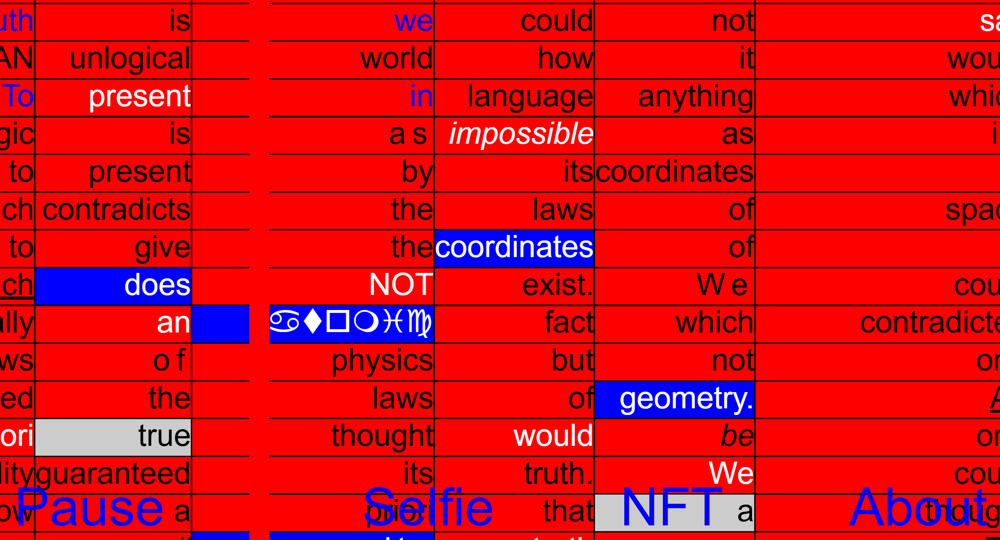
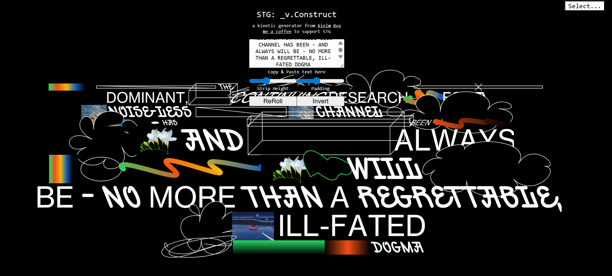

cybernetic bodies, zero-interface, identity
https://theuselessweb.com/
sunsetdandan.itch.io
https://beckmans.college/2024/sv
wwwwwwwww.jodi.org
tdingsun.github.io
media.mit.edu
https://beyondresolution.info/
teleportacia.org
https://cyberfeminismindex.com/
https://mouchette.org/
https://sarahfatmi.com/
siteplan.lidofestival.co.uk
https://www.newrafael.com/
https://constraint.systems/

https://symphonyinacid.net/
https://dictionaryofonlinebehavior.com/
https://yannickgregoire.nl/

spacetypegenerator.com